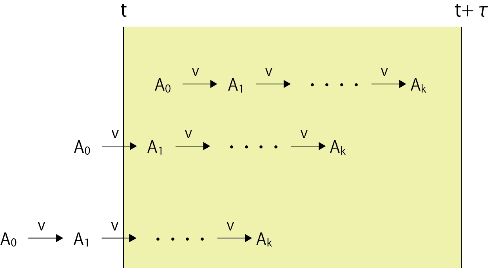

逐次反応における自己相関関数について-02
ｒ回の逐次反応が起こる確率
次に，ｔ秒からｔ+τ秒の間にｒ回の逐次反応が起こる確率を求めましょう． つまり， 反応の回数がr回起こらないと反応が起こらないので，
0 |
～ |
r-1 |
逐次反応は起こらない |
r |
～ |
2r-1 |
１回逐次反応が起こる |
2r |
～ |
3r-1 |
２回逐次反応が起こる |
となります．
ただし，この計算は，τ秒前にイベントが起こっていない場合です．
すでに観測しているτ秒の間より以前に逐次反応が進行中かもしれない．

なので， すでに１回各反応が起こっている場合には，
0 |
～ |
r-2 |
逐次反応は起こらない |
r-1 |
～ |
2r-2 |
１回逐次反応が起こる |
2r-1 |
～ |
3r-2 |
２回逐次反応が起こる |
となるのです．同様に，すでに2回，すでに3回，といろいろな場合が想定されます．
ですので，この平均を取ればよいわけです．
これをまとめると，１回も起こらない確率（ｍはこの逐次反応が起こる確率）は，
\(\Large prob \left[ m=0 \ in \ interval (t, t + \tau) \right] =
\begin{bmatrix} & (P_0 + P_1 + \cdots + P_{r-1}) \\
+ & (P_0 + P_1 + \cdots + P_{r-2}) \\
+ & \cdots \\
+ & P_0 \\ \end{bmatrix} \)
となります．書き換えると，
\(\Large prob \left[ m=0 \ in \ interval (t, t + \tau) \right] = \frac{1}{r} \displaystyle \sum_{ i = 0 }^{ r } \displaystyle \sum_{ j = 0 }^{ r-i} P_j \)
となります．
同様に，１回起こる確率は，
\(\Large prob \left[ m=1 \ in \ interval (t, t + \tau) \right] =
\begin{bmatrix} & (P_r + P_{r+1} + \cdots + P_{2r-1}) \\
+ & (P_{r-1} + P_r + \cdots + P_{2r-2}) \\
+ & \cdots \\
+ & P_1 + P_2+ \cdots + P_r \\ \end{bmatrix} \)
となります．書き換えると，
\(\Large \hspace{ 210pt } = \frac{1}{r} \displaystyle \sum_{ i = 1 }^{ r } \displaystyle \sum_{ j = 1 }^{ r} P_{r-i+j} \)
となります．
同様に，2回起こる確率は，
\(\Large prob \left[ m=2 \ in \ interval (t, t + \tau) \right] =
\begin{bmatrix} & (P_{2r} + P_{2r+1} + \cdots + P_{3r-1}) \\
+ & (P_{2r-1} + P_{2r} + \cdots + P_{3r-2}) \\
+ & \cdots \\
+ & P_{r+1} + P_{r+2}+ \cdots + P_{2r} \\ \end{bmatrix} \)
となります．書き換えると，
\(\Large \hspace{ 210pt } = \frac{1}{r} \displaystyle \sum_{ i = 1 }^{ r } \displaystyle \sum_{ j = 1 }^{ r} P_{2r-i+j} \)
となります．
つまり，ｍ回起こる確率（m＝０を除く）は，
\(\Large prob \left[ m, \ m \ integer >0 \ in \ interval (t, t + \tau) \right] = \frac{1}{r} \displaystyle \sum_{ i = 1 }^{ r } \displaystyle \sum_{ j = 1 }^{ r} P_{rm-i+j} \)
と書くことができます．
次ページに，自己相関の導き出し方を計算していきましょう．